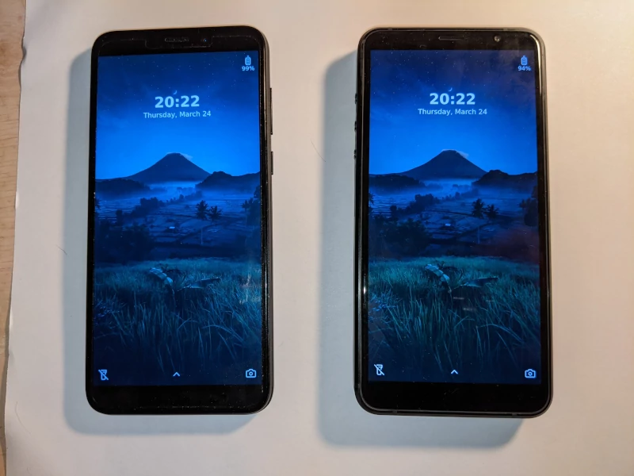

Mainline Linux Phones
Supported Devices
The 2 supported devices are the PinePhone Pro and the Librem 5. The original Pinephone can likely use the same Debian package as the Pinephone Pro, but its outdated chipset is not powerful enough for a decent user experience. 
Running Capyloon
Full images are available and can be downloaded from here.
Status
Several APIs needed for a full phone experience are not yet implemented on mainline Linux, and some have partial implementations:
- Audio channel management.
- Wifi (partial).
- Telephony (calls, data, sms, mms).
- Bluetooth.
- GPS.
- Other sensors (orientation, proximity, etc.).
Rebuilding a debian package after making UI changes is possible with the
jackady tool from the
Nutria repository:
-
Fetch the linux aarch64 prebuilts:
./jackady update-prebuilts --target=aarch64-unknown-linux-gnu -
Rebuild the deb:
./jackady deb --device=pinephone|librem5
We don't track you and use analytics by
Plausible.